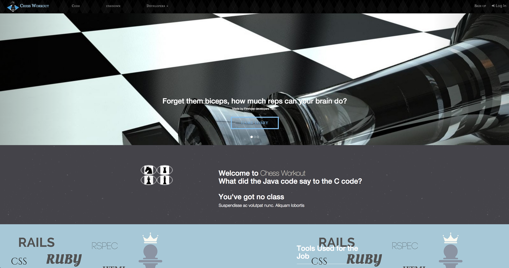
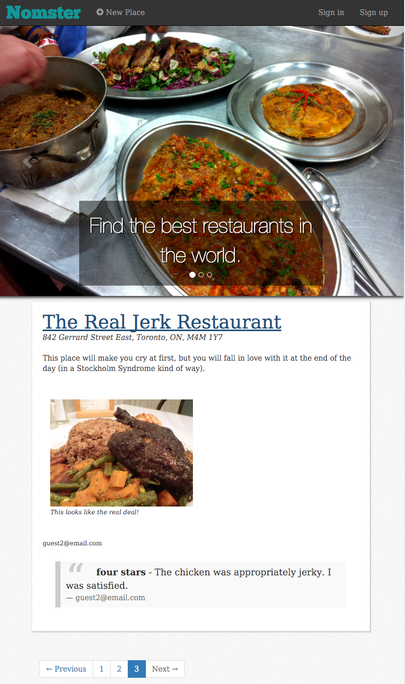

Independent Projects
Independent Projects

"Chess Workout", a full-fledged chess game in the browser. Developed as the final Firehose Project agile team project, in partnership with Devin Mois, Ken Ho, Michael Kulinski, and Danny Han (with mentorship by Michael Hoitomt).

"Psycho Adventure", an interactive detective story with a Rails backend. Final project at Bitmaker Labs, with Andrew Bolt and Pat Skarlat. Click on the above image to try out the app.
Learning Projects
Learning Projects

"Nomster", a yelp clone. The second rails application made during my time with The Firehose Project. Features: Google Maps integration, image uploading, and comments. Click on the above image to try out the app.